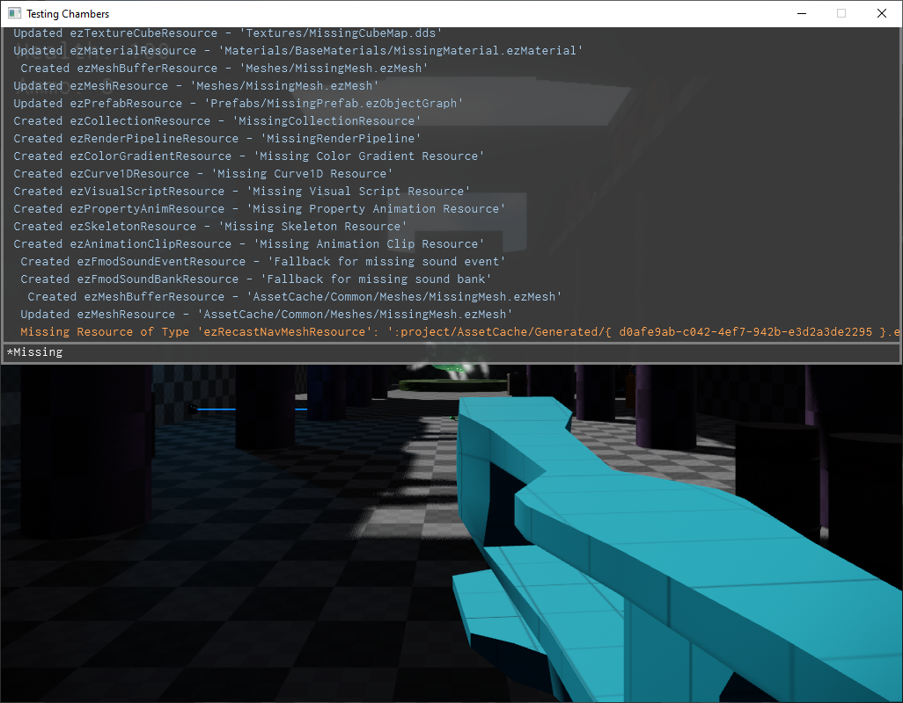

Console
The in-game console is a utility for inspecting the log, modifying CVars and calling console functions.

Key bindings
The default key binding for the console is:
- F1 - Opens/closes the console.
- Up / Down - Select a previously entered command from the history. Note that the history is saved to disk so that commands don't need to be typed again after restarting.
- F2 and F3 - Repeat last and second-to-last commands. This works even when the console is currently closed.
- ESC - Clears the input line.
- Page Up / Page Down - Scrolls the log output up / down.
- TAB - Auto-completes the current input. Also displays all available input options in the output. Ie. lists the names of CVars and console functions and prints their descriptions.
- Enter - Executes the typed command. If the typed text is only the name of a CVar without an assignment, this will simply print the current value and the description of the CVar.
Modify CVars
You can modify CVars by typing:
CVarName = value
See the CVars chapter for details.
Binding Keys
To bind commands to certain keys you can call:
bind f g_showFPS=
This would bind the command 'g_showFPS=' (which toggles the display of the FPS counter) to the f-key. You can only bind commands to printable characters (a-z, 0-9) and the casing matters. So you can also bind another command to SHIFT+f by using bind F ....
To unbind a key call:
unbind f
Search
You can filter the output of the console (the log messages) to only strings that contain some string by typing a * at the beginning:
*some text
Now the output window will only show strings that contain 'some text'.
Console Functions
Console functions are an easy way to expose C++ utility functions through the console. The class ezConsoleFunction is used to wrap any function (static or method function) in a delegate and enable the console to call it. Of course, since the user can only input certain types of variables in the console, the argument types that you can use are very limited: strings, numbers (int / float) and boolean.
This code snippet shows how to declare a console function in a class, for example inside a custom game state.
void ConFunc_Print(ezString sText);
ezConsoleFunction<void(ezString)> m_ConFunc_Print;
In the implementation the binding has to be completed. You need to provide a name under which to expose the function, a description (this should include the parameter list) and the actual function to forward the call to. For member functions this has to be an ezDelegate to also bind to the class instance (this).
SampleGameState::SampleGameState()
: m_ConFunc_Print("Print", "(string arg1): Prints 'arg1' to the log", ezMakeDelegate(&SampleGameState::ConFunc_Print, this))
{
}
void SampleGameState::ConFunc_Print(ezString sText)
{
ezLog::Info("Text: '{}'", sText);
}
When you now open the console (F1) in-game and press TAB, the 'Print' function will be among the listed functions. You can then execute it:
Print("Hello Console")
If you need to call a certain function repeatedly, you can bind the call to a key or use F2 and F3 to repeat it, as long as it is the last or second-to-last command in your history.
TypeScript
You can also register custom console functions through the TypeScript API.